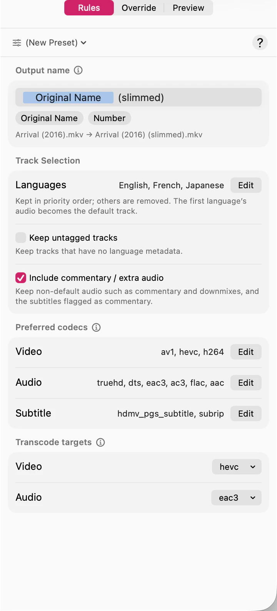

Keeping a track normally means copying it exactly as it is. But sometimes you keep a track that’s in a format you can’t use — a lossless audio mix your player won’t decode, say. These two settings describe that case, and only that case.
They’re two different lists doing two different jobs, which is the thing worth getting straight before you touch either.

Preferred codecs is a filter on what’s already in the file. It says: if a track I’m keeping is in one of these formats, leave it alone.
Transcode targets is the fallback. It says: and if it isn’t, convert it to this.
So a track is copied untouched when its codec is in the preferred list, and converted to the target when it isn’t. A file whose tracks are all preferred is never converted at all, which is the normal case and the fast one.
Adding more codecs to the preferred list means less converting, not more. The list is what you’re willing to accept as-is.
Subtitles have a preferred list but no transcode target: a subtitle track is either kept or dropped, never converted.
Converting is the slow path, and SubTrack always tells you it’s coming rather than surprising you with it. Select a file and choose Override in the inspector — any track that will be converted says so, and names what it’s being converted to.
Choosing to convert is one thing; having the encoder to do it is another. When SubTrack warns that the build you’re running can’t write a target you picked, see If a codec can’t be encoded.